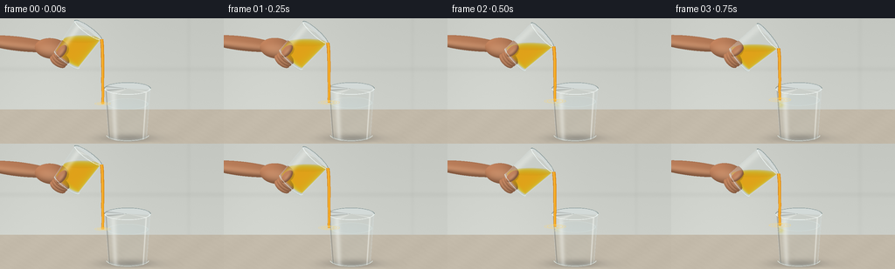
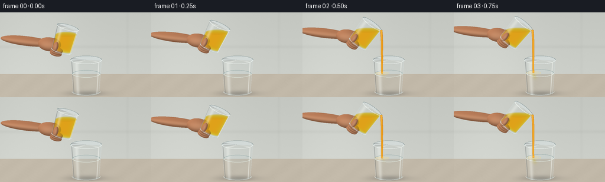
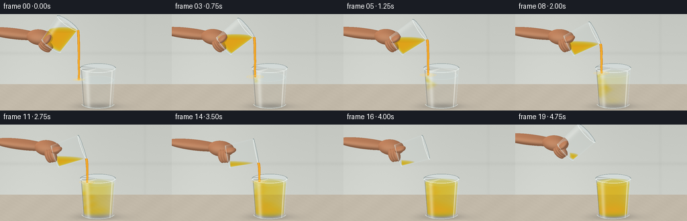
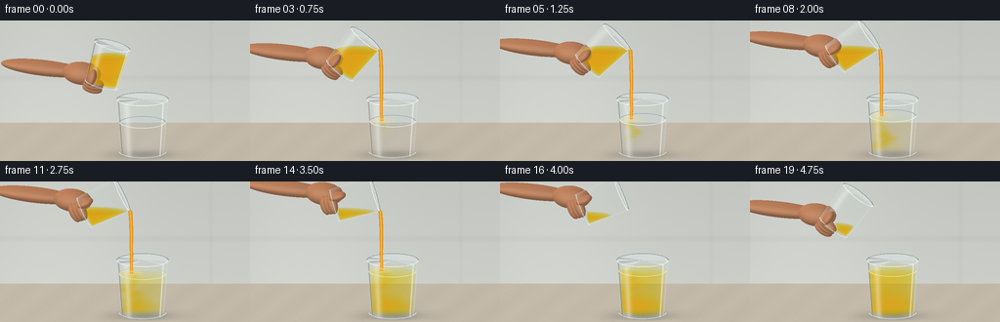

CODING AGENTS AS PIXEL WORLD MODELS
traex/GPT-6.1-Sol · phygen_139
点击播放 · 原生 RGB 像素
逐轮保存的候选
回放视频、检查图与代码变化。
每份候选均可单独播放。实际图片检查记录在下方工具轨迹中。
候选 01播放与检查图
点击播放 · 原生 RGB 像素


展开代码变化
--- 上一保存版本
+++ 本次保存版本
@@ -0,0 +1,321 @@
+"""Text-only procedural, supersampled RGB rendering of a gentle pour.
+Uses analytic glass/volume geometry, lighting, and evolving pigment fields.
+"""
+from pathlib import Path
+import math
+import numpy as np
+from PIL import Image, ImageDraw
+import artifact_io
+
+ROOT = Path(__file__).resolve().parent
+S = 3
+W,H = 256*S,144*S
+EL = .27
+D = np.array([0.,-math.sin(EL),-math.cos(EL)])
+UP = np.array([0.,math.cos(EL),-math.sin(EL)])
+TARGET = np.array([0.,1.68,0.])
+SCALE = H/3.6
+XX,YY = np.meshgrid((np.arange(W)+.5-W/2)/SCALE,(H/2-np.arange(H)-.5)/SCALE)
+O = TARGET+XX[...,None]*np.array([1.,0.,0.])+YY[...,None]*UP-8*D
+rng=np.random.default_rng(12)
+noise=rng.normal(0,.42,(H,W))
+
+def project(p):
+ p=np.asarray(p)-TARGET
+ return np.stack([W/2+p[...,0]*SCALE,H/2-(p@UP)*SCALE],axis=-1)
+
+def background():
+ t=-O[...,1]/D[1]
+ p=O+t[...,None]*D
+ wall=p[...,2]<-3.0
+ tw=(-3-O[...,2])/D[2]
+ pw=O+tw[...,None]*D
+ # Quiet, defocused warm kitchen wall, with a broad window glow.
+ wallcol=np.empty((H,W,3))
+ lum=8*np.exp(-((XX+1.8)/2.1)**2)-6*(YY/2)
+ wallcol[:]=[201,204,198]
+ wallcol+=lum[...,None]
+ wallcol-=5*np.exp(-((pw[...,1]-1.2)/.075)**2)[...,None]
+ wallcol-=3*np.exp(-((pw[...,0]-2.2)/.06)**2)[...,None]
+ grain=1.2*np.sin(6*p[...,0]+2*p[...,2])+0.7*np.sin(25*p[...,0]-12*p[...,2])
+ veins=np.exp(-((np.sin(1.6*p[...,0]+.55*p[...,2])+.28*np.sin(4*p[...,2]))/.045)**2)
+ table=np.zeros((H,W,3))+[193,184,168]
+ table+=(grain-1.4*veins+2*np.exp(-((p[...,0]+2)/3)**2))[...,None]
+ # Soft contact shadow and caustic, visible through the clear base.
+ sh=np.exp(-((p[...,0]-.47)/.76)**2-((p[...,2]-.1)/.44)**2)
+ table-=sh[...,None]*[42,39,34]
+ caustic=np.exp(-((p[...,0]-.69)/.72)**2-((p[...,2]-.68)/.18)**2)
+ table+=caustic[...,None]*[10,10,8]
+ return np.where(wall[...,None],wallcol,table)+noise[...,None]
+BG=background()
+
+def cone_intersect(base,axis,r0,r1,height):
+ q=O-base
+ u=q@axis
+ v=float(D@axis)
+ qr=q-u[...,None]*axis
+ dr=D-v*axis
+ k=(r1-r0)/height
+ A=float(dr@dr)-(k*v)**2
+ B=2*(qr@dr-(r0+k*u)*k*v)
+ C=np.sum(qr*qr,axis=-1)-(r0+k*u)**2
+ disc=B*B-4*A*C
+ sd=np.sqrt(np.maximum(0,disc))
+ t1=(-B-sd)/(2*A);t2=(-B+sd)/(2*A)
+ lo=np.minimum(t1,t2);hi=np.maximum(t1,t2)
+ if abs(v)>1e-8:
+ c1=-u/v;c2=(height-u)/v
+ lo=np.maximum(lo,np.minimum(c1,c2));hi=np.minimum(hi,np.maximum(c1,c2))
+ else:
+ hi=np.where((u>=0)&(u<=height),hi,-1)
+ valid=(disc>=0)&(hi>lo)&(hi>0)
+ return lo,hi,valid
+
+def ellipsoid(img,center,radii,rot=None,skin=True):
+ if rot is None:rot=np.eye(3)
+ q=(O-center)@rot/np.asarray(radii)
+ d=D@rot/np.asarray(radii)
+ A=d@d;B=2*(q@d);C=np.sum(q*q,axis=-1)-1
+ disc=B*B-4*A*C
+ t=(-B-np.sqrt(np.maximum(disc,0)))/(2*A)
+ mask=(disc>0)&(t>0)
+ p=O+t[...,None]*D
+ n=((p-center)@rot/np.square(radii))@rot.T
+ n/=np.maximum(np.linalg.norm(n,axis=-1,keepdims=True),1e-6)
+ light=np.array([-0.6,.72,.45]);light/=np.linalg.norm(light)
+ diffuse=np.maximum(0,n@light)
+ rim=np.maximum(0,n[...,2])
+ c=np.array([196,132,94])[None,None,:]*(.67+.33*diffuse[...,None])
+ c+=np.array([32,29,25])*(rim**8)[...,None]
+ texture=.55*np.sin(p[...,0]*160)*np.sin(p[...,1]*120)+noise*.65
+ c+=texture[...,None]
+ return np.where(mask[...,None],c,img)
+
+def hand(img,base,a):
+ # Palm and fingers approach from outside the left of the frame.
+ q=np.array([a[1],-a[0],0.])
+ anchor=base+.19*a-.19*q
+ palm=anchor+np.array([-.37,.06,-.1])
+ armc=palm+np.array([-.95,.13,-.04])
+ ang=-.12
+ R=np.array([[math.cos(ang),-math.sin(ang),0],[math.sin(ang),math.cos(ang),0],[0,0,1]])
+ img=ellipsoid(img,armc,[1.12,.205,.21],R)
+ img=ellipsoid(img,palm,[.48,.30,.22],R)
+ # Curled fingers supporting the underside of the base.
+ R2=np.column_stack((a,q,np.array([0,0,1])))
+ for j in range(3):
+ c=base+(-.055+j*.095)*a-.08*q+np.array([-.14,-.02,.1+j*.06])
+ img=ellipsoid(img,c,[.125,.26,.105],R2)
+ return img
+
+# Interior source sample points used to conserve juice while tilting.
+rng2=np.random.default_rng(7)
+n=110000
+su=rng2.uniform(.065,1.1,n)
+sr=np.sqrt(rng2.random(n))*(.40+.04*su/1.1)
+sp=rng2.uniform(0,2*np.pi,n)
+sx=sr*np.cos(sp)
+SOURCE_VOL=math.pi*.428**2*1.035
+
+def juice_plane(theta,frac,base):
+ ys=base[1]+su*math.cos(theta)-sx*math.sin(theta)
+ return float(np.quantile(ys,np.clip(frac,.001,.999)))
+
+def pigment(p,t,level,amount,impact):
+ x,y,z=p[...,0],p[...,1],p[...,2]
+ if amount<1e-6:return np.zeros_like(x)
+ age=max(0,t-.45)
+ depth=np.maximum(level-y,0)
+ reach=min(level-.09,age*.54)
+ # Dense orange rolls descend, widening in the lower half of the water.
+ center=impact[0]+.085*np.sin(depth*9-age*2.1)+.035*np.sin(depth*19+age*1.6)
+ cz=impact[2]+.055*np.sin(depth*12+age*1.7)
+ width=.045+.17*np.minimum(depth,.8)+.025*age
+ dist=((x-center)/width)**2+((z-cz)/(width*.78))**2
+ front=1/(1+np.exp(np.clip((depth-reach)/.047,-40,40)))
+ ripple=.68+.20*np.sin(22*depth+10*x-age*3)+.12*np.sin(29*z-17*depth+age*2)
+ plume=np.exp(-dist*.8)*front*ripple
+ # The denser juice spreads along the bottom and then gradually diffuses.
+ bottom=max(0,age-1.4)
+ pool=np.exp(-((y-.13)/(.13+.055*bottom))**2)
+ pool*=np.exp(-(((x-.4)/(.23+.16*bottom))**2+((z+.01)/(.22+.15*bottom))**2))
+ mix=min(.40,max(0,age-1.3)*.115)*min(1,amount/.18)
+ return np.clip(mix+.94*plume+min(.75,bottom*.34)*pool,0,1.3)
+
+def glass(img,base,axis,r0,r1,h,level,is_source,t,amount,impact):
+ near,far,mask=cone_intersect(base,axis,r0,r1,h)
+ innbase=base+axis*.065
+ innnear,innfar,imask=cone_intersect(innbase,axis,r0-.025,r1-.025,h-.065)
+ p=O+near[...,None]*D
+ u=(p-base)@axis
+ rad=p-base-u[...,None]*axis
+ k=(r1-r0)/h
+ normal=rad/np.maximum(np.linalg.norm(rad,axis=-1,keepdims=True),1e-8)-k*axis
+ normal/=np.maximum(np.linalg.norm(normal,axis=-1,keepdims=True),1e-8)
+ view=np.clip(-normal@D,0,1)
+ fresnel=.035+.965*(1-view)**5
+ # Refraction: gently compress and shift the environment inside curved glass.
+ shift=np.rint(normal[...,0]*3.3*S*(1-view*.3)).astype(int)
+ rows=np.arange(H)[:,None];cols=np.arange(W)[None,:]
+ refr=img[rows,np.clip(cols+shift,0,W-1)]*.973+np.array([3.2,4.8,5.3])
+ # Closed-volume ray interval intersected with horizontal fluid surface.
+ plane=(level-O[...,1])/D[1]
+ ln=np.maximum(innnear,plane)
+ lf=innfar
+ wet=imask&(lf>ln)
+ length=np.where(wet,np.maximum(lf-ln,0),0)
+ if is_source:
+ tr=np.exp(-length[...,None]*np.array([.8,2.0,6.9]))
+ liquid=refr*tr+np.array([246,149,19])*(1-tr)
+ # Slight fine pulp suspended in the juice.
+ liquid+=noise[...,None]*.3
+ else:
+ optical=np.zeros((H,W))
+ for j in range(11):
+ pt=O+(ln+(j+.5)/11*np.maximum(lf-ln,0))[...,None]*D
+ optical+=pigment(pt,t,level,amount,impact)/11
+ optical*=length
+ tr=np.exp(-optical[...,None]*np.array([.8,2.2,6.5]))
+ liquid=refr*tr+np.array([244,158,25])*(1-tr)
+ liquid+=np.minimum(length,.9)[...,None]*[.1,1.5,2.5]
+ c=np.where(wet[...,None],liquid,refr)
+ # Smooth liquid meniscus, not an opaque colored disc.
+ surface=wet&(plane>innnear)&(plane<innfar)
+ surfpt=O+plane[...,None]*D
+ rad2=np.sqrt((surfpt[...,0]-base[0])**2+(surfpt[...,2]-base[2])**2)
+ if not is_source:
+ rr=np.sqrt((surfpt[...,0]-impact[0])**2+((surfpt[...,2]-impact[2])*1.15)**2)
+ waves=np.sin(rr*54-t*12)*np.exp(-rr*4)*min(1,amount*10)
+ glint=np.exp(-((rad2-(r0+(r1-r0)*level/h-.045))/.02)**2)
+ surfc=c*.965+np.array([6,8,9])+waves[...,None]*3+glint[...,None]*[9,12,13]
+ else:
+ surfc=c*.91+np.array([15,10,0])
+ c=np.where(surface[...,None],surfc,c)
+ # Reflection strips from broad window and narrow light panels.
+ nx=normal[...,0];nz=normal[...,2]
+ wide=np.exp(-((nx+.63)/.13)**2)*np.maximum(0,nz)**.4
+ narrow=np.exp(-((nx-.81)/.032)**2)*np.maximum(0,nz)**.3
+ strip=wide*.40+narrow*.65
+ edge=np.clip(fresnel*.8,0,.65)
+ reflection=np.zeros_like(c)+[217,225,225]
+ c=c*(1-edge[...,None])+reflection*edge[...,None]
+ c=c*(1-strip[...,None])+np.array([250,252,247])*strip[...,None]
+ dark=np.exp(-((nx+.94)/.03)**2)*.22
+ c*=1-dark[...,None]
+ # Thick clear foot produces a pale refractive double line.
+ foot=(u<.085)&mask
+ c=np.where(foot[...,None],c*.87+np.array([21,24,25]),c)
+ return np.where(mask[...,None],c,img)
+
+def line3(draw,pts,color,width):
+ coords=project(np.array(pts))
+ draw.line([tuple(v) for v in coords],fill=color,width=max(1,round(width*S)),joint='curve')
+
+def rim(im,base,a,r,h):
+ dr=ImageDraw.Draw(im,'RGBA')
+ q=np.array([a[1],-a[0],0.]);v=np.array([0.,0.,1.])
+ cen=base+a*h
+ for j in range(120):
+ t1=j/120*2*np.pi;t2=(j+1)/120*2*np.pi
+ pts=[cen+r*(q*np.cos(t)+v*np.sin(t)) for t in [t1,t2]]
+ front=np.sin((t1+t2)*.5)>0
+ color=(236,246,245,205) if front else (103,125,127,145)
+ line3(dr,pts,color,.82 if front else .66)
+ # A second thin inner edge makes the transparent glass thickness explicit.
+ pts=[cen+(r-.021)*(q*np.cos(t)+v*np.sin(t)) for t in np.linspace(0,np.pi,80)]
+ line3(dr,pts,(255,255,250,160),.4)
+ cb=base+a*.036
+ pts=[cb+r*.91*(q*np.cos(t)+v*np.sin(t)) for t in np.linspace(0,np.pi,80)]
+ line3(dr,pts,(228,239,236,150),.67)
+
+
+def stream(im,lip,level,t,flow):
+ if flow<=0:return
+ dr=ImageDraw.Draw(im,'RGBA')
+ endy=level+.012
+ length=max(.01,lip[1]-endy)
+ pts=[];widths=[]
+ for j in range(55):
+ u=j/54
+ y=lip[1]-length*u
+ x=lip[0]+.034*(1-np.exp(-u*7))+.005*np.sin(u*17+t*5)*u
+ z=lip[2]+.004*np.sin(u*13+t*3)
+ pts.append([x,y,z])
+ widths.append((.046-.014*u)*min(1,flow/.014)**.5)
+ edge1=[];edge2=[]
+ for p,w in zip(pts,widths):
+ edge1.append(project(np.array(p)+np.array([-w,0,0])))
+ edge2.append(project(np.array(p)+np.array([w,0,0])))
+ dr.polygon([tuple(p) for p in edge1+edge2[::-1]],fill=(221,135,16,230))
+ line3(dr,pts,(255,179,32,215),1.25)
+ highlights=[np.asarray(p)+[-.014,0,.015] for p in pts]
+ line3(dr,highlights,(255,220,114,180),.48)
+ # The gentle impact only forms small ripples, not a violent splash.
+ end=np.array(pts[-1]);end[1]=level+.018
+ for j in range(3):
+ rr=.07+((t*1.3+j*.31)%1)*.24
+ pp=[end+np.array([rr*np.cos(a),.003,rr*.8*np.sin(a)]) for a in np.linspace(0,2*np.pi,90)]
+ line3(dr,pp,(253,215,115,70-j*12),.5)
+ for k in range(2):
+ a=t*5+k*3
+ p=end+np.array([.052*np.cos(a),.045+.018*np.sin(a),.035*np.sin(a)])
+ c=project(p);r=.6*S
+ dr.ellipse((c[0]-r,c[1]-r,c[0]+r,c[1]+r),fill=(246,205,101,165))
+
+
+def generate():
+ frames=[]
+ base0=np.array([-1.31,2.30,0.02])
+ receiver=np.array([.45,.025,0.])
+ initial=.78
+ remain=initial
+ received=0
+ for i in range(20):
+ t=i/4
+ if i<3: theta=math.radians(35+6*i)
+ elif i<=15:theta=math.radians(47+2.6*(i-2))
+ else:theta=math.radians(80.8-8.5*(i-15))
+ a=np.array([math.sin(theta),math.cos(theta),0.])
+ q=np.array([a[1],-a[0],0.])
+ base=base0+np.array([.012*i if i<16 else .18-.055*(i-15),.016*np.sin(i*.2)+(max(0,i-15))*.045,0])
+ lip=base+a*1.1+q*.47
+ lip[2]=.035
+ # Maximum volume retained below the lowest point of the tilted rim.
+ ys=base[1]+su*math.cos(theta)-sx*math.sin(theta)
+ capacity=float(np.mean(ys<lip[1]-.005))
+ flow=min(.071,max(0,remain-capacity)) if i<17 else 0.
+ remain-=flow
+ received+=flow*SOURCE_VOL
+ level=.955+received/(math.pi*.598**2)
+ level=min(level,1.325)
+ juicelevel=juice_plane(theta,remain,base)
+ if flow>0:juicelevel=min(juicelevel,lip[1]+.004)
+ impact=lip+np.array([.032,0,0]);impact[1]=level
+ img=hand(BG.copy(),base,a)
+ img=glass(img,base,a,.425,.47,1.1,juicelevel,True,t,received,impact)
+ # Thumb on the foreground of the bottom third of the juice tumbler.
+ R=np.column_stack((a,q,np.array([0.,0.,1.])))
+ thumbc=base+a*.22-q*.27+np.array([-.035,.025,.35])
+ img=ellipsoid(img,thumbc,[.22,.115,.115],R)
+ img=glass(img,receiver,np.array([0.,1.,0.]),.55,.655,1.43,level,False,t,received,impact)
+ im=Image.fromarray(np.uint8(np.clip(img,0,255)))
+ rim(im,base,a,.47,1.1)
+ rim(im,receiver,np.array([0.,1.,0.]),.655,1.43)
+ stream(im,lip,level,t,flow)
+ # Subtle remaining bubbles at the impact site in later frames.
+ if received>.12:
+ dr=ImageDraw.Draw(im,'RGBA')
+ for b in range(5):
+ bx=impact[0]+.05*np.sin(b*4+t)
+ bz=.02+.044*np.cos(b*3)
+ by=level-.025-(.015*b+(.1*t)% .09)
+ cc=project([bx,by,bz]);rr=.5*S
+ dr.ellipse((cc[0]-rr,cc[1]-rr,cc[0]+rr,cc[1]+rr),outline=(244,224,158,120),width=1)
+ # Supersampling gives fine continuous edges without cartoon outlines.
+ im=im.resize((256,144),Image.Resampling.LANCZOS)
+ frames.append(np.asarray(im,dtype=np.uint8))
+ print(f'frame {i:02d}: tilt={math.degrees(theta):.1f} flow={flow:.3f} water={level:.3f}',flush=True)
+ return np.stack(frames)
+
+if __name__=='__main__':
+ artifact_io.save(generate(),ROOT)
候选 02播放与检查图
点击播放 · 原生 RGB 像素


展开代码变化
--- 上一保存版本
+++ 本次保存版本
@@ -37,7 +37,7 @@
wallcol+=lum[...,None]
wallcol-=5*np.exp(-((pw[...,1]-1.2)/.075)**2)[...,None]
wallcol-=3*np.exp(-((pw[...,0]-2.2)/.06)**2)[...,None]
- grain=1.2*np.sin(6*p[...,0]+2*p[...,2])+0.7*np.sin(25*p[...,0]-12*p[...,2])
+ grain=1.2*np.sin(6*p[...,0]+2*p[...,2])+0.25*np.sin(25*p[...,0]-12*p[...,2])
veins=np.exp(-((np.sin(1.6*p[...,0]+.55*p[...,2])+.28*np.sin(4*p[...,2]))/.045)**2)
table=np.zeros((H,W,3))+[193,184,168]
table+=(grain-1.4*veins+2*np.exp(-((p[...,0]+2)/3)**2))[...,None]
@@ -139,7 +139,7 @@
bottom=max(0,age-1.4)
pool=np.exp(-((y-.13)/(.13+.055*bottom))**2)
pool*=np.exp(-(((x-.4)/(.23+.16*bottom))**2+((z+.01)/(.22+.15*bottom))**2))
- mix=min(.40,max(0,age-1.3)*.115)*min(1,amount/.18)
+ mix=min(.29,max(0,age-1.3)*.078)*min(1,amount/.18)
return np.clip(mix+.94*plume+min(.75,bottom*.34)*pool,0,1.3)
def glass(img,base,axis,r0,r1,h,level,is_source,t,amount,impact):
@@ -267,27 +267,25 @@
frames=[]
base0=np.array([-1.31,2.30,0.02])
receiver=np.array([.45,.025,0.])
- initial=.78
+ initial=.70
remain=initial
received=0
for i in range(20):
t=i/4
- if i<3: theta=math.radians(35+6*i)
- elif i<=15:theta=math.radians(47+2.6*(i-2))
- else:theta=math.radians(80.8-8.5*(i-15))
+ if i<3: theta=math.radians(15+10*i)
+ elif i<=15:theta=math.radians(35+3.2*(i-2))
+ else:theta=math.radians(76.6-10*(i-15))
a=np.array([math.sin(theta),math.cos(theta),0.])
q=np.array([a[1],-a[0],0.])
- base=base0+np.array([.012*i if i<16 else .18-.055*(i-15),.016*np.sin(i*.2)+(max(0,i-15))*.045,0])
- lip=base+a*1.1+q*.47
- lip[2]=.035
+ lip=np.array([.13-.045*max(0,i-15),2.77+.015*np.sin(i*.22)+.04*max(0,i-15),.025])
+ base=lip-a*1.1-q*.47
# Maximum volume retained below the lowest point of the tilted rim.
ys=base[1]+su*math.cos(theta)-sx*math.sin(theta)
capacity=float(np.mean(ys<lip[1]-.005))
flow=min(.071,max(0,remain-capacity)) if i<17 else 0.
remain-=flow
received+=flow*SOURCE_VOL
- level=.955+received/(math.pi*.598**2)
- level=min(level,1.325)
+ level=.84+received/(math.pi*.598**2)
juicelevel=juice_plane(theta,remain,base)
if flow>0:juicelevel=min(juicelevel,lip[1]+.004)
impact=lip+np.array([.032,0,0]);impact[1]=level
@@ -301,6 +299,15 @@
im=Image.fromarray(np.uint8(np.clip(img,0,255)))
rim(im,base,a,.47,1.1)
rim(im,receiver,np.array([0.,1.,0.]),.655,1.43)
+ # Horizontal free water surface, translucent elliptical meniscus.
+ dr=ImageDraw.Draw(im,'RGBA')
+ water_r=.55+(.655-.55)*level/1.43-.033
+ for back in (True,False):
+ angles=np.linspace(np.pi,2*np.pi,90) if back else np.linspace(0,np.pi,90)
+ pts=[np.array([.45+water_r*np.cos(ang),level,water_r*np.sin(ang)]) for ang in angles]
+ tint=(121,147,146,115) if back else (235,247,239,160)
+ if received>.20: tint=(205,188,106,100) if back else (255,237,161,145)
+ line3(dr,pts,tint,.55)
stream(im,lip,level,t,flow)
# Subtle remaining bubbles at the impact site in later frames.
if received>.12:
可观测工具轨迹
实际执行的命令与返回图片。
命令 1exit 0
/bin/bash -lc "ls -la && cat prompt.txt && printf '\\n---RULES---\\n' && cat GENERATION_RULES.md && printf '\\n---SPEC---\\n' && cat task_spec.json"
命令 2exit 0
/bin/bash -lc 'cat artifact_io.py && cat player_template.html'
命令 3exit 0
/bin/bash -lc "python - <<'PY' import numpy,PIL print(numpy.__version__) PY"
命令 4exit 0
/bin/bash -lc "cat > generate.py <<'PY'
\"\"\"Text-only procedural, supersampled RGB rendering of a gentle pour.
Uses analytic glass/volume geometry, lighting, and evolving pigment fields.
\"\"\"
from pathlib import Path
import math
import numpy as np
from PIL import Image, ImageDraw
import artifact_io
ROOT = Path(__file__).resolve().parent
S = 3
W,H = 256*S,144*S
EL = .27
D = np.array([0.,-math.sin(EL),-math.cos(EL)])
UP = np.array([0.,math.cos(EL),-math.sin(EL)])
TARGET = np.array([0.,1.68,0.])
SCALE = H/3.6
XX,YY = np.meshgrid((np.arange(W)+.5-W/2)/SCALE,(H/2-np.arange(H)-.5)/SCALE)
O = TARGET+XX[...,None]*np.array([1.,0.,0.])+YY[...,None]*UP-8*D
rng=np.random.default_rng(12)
noise=rng.normal(0,.42,(H,W))
def project(p):
p=np.asarray(p)-TARGET
return np.stack([W/2+p[...,0]*SCALE,H/2-(p@UP)*SCALE],axis=-1)
def background():
t=-O[...,1]/D[1]
p=O+t[...,None]*D
wall=p[...,2]<-3.0
tw=(-3-O[...,2])/D[2]
pw=O+tw[...,None]*D
# Quiet, defocused warm kitchen wall, with a broad window glow.
wallcol=np.empty((H,W,3))
lum=8*np.exp(-((XX+1.8)/2.1)**2)-6*(YY/2)
wallcol[:]=[201,204,198]
wallcol+=lum[...,None]
wallcol-=5*np.exp(-((pw[...,1]-1.2)/.075)**2)[...,None]
wallcol-=3*np.exp(-((pw[...,0]-2.2)/.06)**2)[...,None]
grain=1.2*np.sin(6*p[...,0]+2*p[...,2])+0.7*np.sin(25*p[...,0]-12*p[...,2])
veins=np.exp(-((np.sin(1.6*p[...,0]+.55*p[...,2])+.28*np.sin(4*p[...,2]))/.045)**2)
table=np.zeros((H,W,3))+[193,184,168]
table+=(grain-1.4*veins+2*np.exp(-((p[...,0]+2)/3)**2))[...,None]
# Soft contact shadow and caustic, visible through the clear base.
sh=np.exp(-((p[...,0]-.47)/.76)**2-((p[...,2]-.1)/.44)**2)
table-=sh[...,None]*[42,39,34]
caustic=np.exp(-((p[...,0]-.69)/.72)**2-((p[...,2]-.68)/.18)**2)
table+=caustic[...,None]*[10,10,8]
return np.where(wall[...,None],wallcol,table)+noise[...,None]
BG=background()
def cone_intersect(base,axis,r0,r1,height):
q=O-base
u=q@axis
v=float(D@axis)
qr=q-u[...,None]*axis
dr=D-v*axis
k=(r1-r0)/height
A=float(dr@dr)-(k*v)**2
B=2*(qr@dr-(r0+k*u)*k*v)
C=np.sum(qr*qr,axis=-1)-(r0+k*u)**2
disc=B*B-4*A*C
sd=np.sqrt(np.maximum(0,disc))
t1=(-B-sd)/(2*A);t2=(-B+sd)/(2*A)
lo=np.minimum(t1,t2);hi=np.maximum(t1,t2)
if abs(v)>1e-8:
c1=-u/v;c2=(height-u)/v
lo=np.maximum(lo,np.minimum(c1,c2));hi=np.minimum(hi,np.maximum(c1,c2))
else:
hi=np.where((u>=0)&(u<=height),hi,-1)
valid=(disc>=0)&(hi>lo)&(hi>0)
return lo,hi,valid
def ellipsoid(img,center,radii,rot=None,skin=True):
if rot is None:rot=np.eye(3)
q=(O-center)@rot/np.asarray(radii)
d=D@rot/np.asarray(radii)
A=d@d;B=2*(q@d);C=np.sum(q*q,axis=-1)-1
disc=B*B-4*A*C
t=(-B-np.sqrt(np.maximum(disc,0)))/(2*A)
mask=(disc>0)&(t>0)
p=O+t[...,None]*D
n=((p-center)@rot/np.square(radii))@rot.T
n/=np.maximum(np.linalg.norm(n,axis=-1,keepdims=True),1e-6)
light=np.array([-0.6,.72,.45]);light/=np.linalg.norm(light)
diffuse=np.maximum(0,n@light)
rim=np.maximum(0,n[...,2])
c=np.array([196,132,94])[None,None,:]*(.67+.33*diffuse[...,None])
c+=np.array([32,29,25])*(rim**8)[...,None]
texture=.55*np.sin(p[...,0]*160)*np.sin(p[...,1]*120)+noise*.65
c+=texture[...,None]
return np.where(mask[...,None],c,img)
def hand(img,base,a):
# Palm and fingers approach from outside the left of the frame.
q=np.array([a[1],-a[0],0.])
anchor=base+.19*a-.19*q
palm=anchor+np.array([-.37,.06,-.1])
armc=palm+np.array([-.95,.13,-.04])
ang=-.12
R=np.array([[math.cos(ang),-math.sin(ang),0],[math.sin(ang),math.cos(ang),0],[0,0,1]])
img=ellipsoid(img,armc,[1.12,.205,.21],R)
img=ellipsoid(img,palm,[.48,.30,.22],R)
# Curled fingers supporting the underside of the base.
R2=np.column_stack((a,q,np.array([0,0,1])))
for j in range(3):
c=base+(-.055+j*.095)*a-.08*q+np.array([-.14,-.02,.1+j*.06])
img=ellipsoid(img,c,[.125,.26,.105],R2)
return img
# Interior source sample points used to conserve juice while tilting.
rng2=np.random.default_rng(7)
n=110000
su=rng2.uniform(.065,1.1,n)
sr=np.sqrt(rng2.random(n))*(.40+.04*su/1.1)
sp=rng2.uniform(0,2*np.pi,n)
sx=sr*np.cos(sp)
SOURCE_VOL=math.pi*.428**2*1.035
def juice_plane(theta,frac,base):
ys=base[1]+su*math.cos(theta)-sx*math.sin(theta)
return float(np.quantile(ys,np.clip(frac,.001,.999)))
def pigment(p,t,level,amount,impact):
x,y,z=p[...,0],p[...,1],p[...,2]
if amount<1e-6:return np.zeros_like(x)
age=max(0,t-.45)
depth=np.maximum(level-y,0)
reach=min(level-.09,age*.54)
# Dense orange rolls descend, widening in the lower half of the water.
center=impact[0]+.085*np.sin(depth*9-age*2.1)+.035*np.sin(depth*19+age*1.6)
cz=impact[2]+.055*np.sin(depth*12+age*1.7)
width=.045+.17*np.minimum(depth,.8)+.025*age
dist=((x-center)/width)**2+((z-cz)/(width*.78))**2
front=1/(1+np.exp(np.clip((depth-reach)/.047,-40,40)))
ripple=.68+.20*np.sin(22*depth+10*x-age*3)+.12*np.sin(29*z-17*depth+age*2)
plume=np.exp(-dist*.8)*front*ripple
# The denser juice spreads along the bottom and then gradually diffuses.
bottom=max(0,age-1.4)
pool=np.exp(-((y-.13)/(.13+.055*bottom))**2)
pool*=np.exp(-(((x-.4)/(.23+.16*bottom))**2+((z+.01)/(.22+.15*bottom))**2))
mix=min(.40,max(0,age-1.3)*.115)*min(1,amount/.18)
return np.clip(mix+.94*plume+min(.75,bottom*.34)*pool,0,1.3)
def glass(img,base,axis,r0,r1,h,level,is_source,t,amount,impact):
near,far,mask=cone_intersect(base,axis,r0,r1,h)
innbase=base+axis*.065
innnear,innfar,imask=cone_intersect(innbase,axis,r0-.025,r1-.025,h-.065)
p=O+near[...,None]*D
u=(p-base)@axis
rad=p-base-u[...,None]*axis
k=(r1-r0)/h
normal=rad/np.maximum(np.linalg.norm(rad,axis=-1,keepdims=True),1e-8)-k*axis
normal/=np.maximum(np.linalg.norm(normal,axis=-1,keepdims=True),1e-8)
view=np.clip(-normal@D,0,1)
fresnel=.035+.965*(1-view)**5
# Refraction: gently compress and shift the environment inside curved glass.
shift=np.rint(normal[...,0]*3.3*S*(1-view*.3)).astype(int)
rows=np.arange(H)[:,None];cols=np.arange(W)[None,:]
refr=img[rows,np.clip(cols+shift,0,W-1)]*.973+np.array([3.2,4.8,5.3])
# Closed-volume ray interval intersected with horizontal fluid surface.
plane=(level-O[...,1])/D[1]
ln=np.maximum(innnear,plane)
lf=innfar
wet=imask&(lf>ln)
length=np.where(wet,np.maximum(lf-ln,0),0)
if is_source:
tr=np.exp(-length[...,None]*np.array([.8,2.0,6.9]))
liquid=refr*tr+np.array([246,149,19])*(1-tr)
# Slight fine pulp suspended in the juice.
liquid+=noise[...,None]*.3
else:
optical=np.zeros((H,W))
for j in range(11):
pt=O+(ln+(j+.5)/11*np.maximum(lf-ln,0))[...,None]*D
optical+=pigment(pt,t,level,amount,impact)/11
optical*=length
tr=np.exp(-optical[...,None]*np.array([.8,2.2,6.5]))
liquid=refr*tr+np.array([244,158,25])*(1-tr)
liquid+=np.minimum(length,.9)[...,None]*[.1,1.5,2.5]
c=np.where(wet[...,None],liquid,refr)
# Smooth liquid meniscus, not an opaque colored disc.
surface=wet&(plane>innnear)&(plane<innfar)
surfpt=O+plane[...,None]*D
rad2=np.sqrt((surfpt[...,0]-base[0])**2+(surfpt[...,2]-base[2])**2)
if not is_source:
rr=np.sqrt((surfpt[...,0]-impact[0])**2+((surfpt[...,2]-impact[2])*1.15)**2)
waves=np.sin(rr*54-t*12)*np.exp(-rr*4)*min(1,amount*10)
glint=np.exp(-((rad2-(r0+(r1-r0)*level/h-.045))/.02)**2)
surfc=c*.965+np.array([6,8,9])+waves[...,None]*3+glint[...,None]*[9,12,13]
else:
surfc=c*.91+np.array([15,10,0])
c=np.where(surface[...,None],surfc,c)
# Reflection strips from broad window and narrow light panels.
nx=normal[...,0];nz=normal[...,2]
wide=np.exp(-((nx+.63)/.13)**2)*np.maximum(0,nz)**.4
narrow=np.exp(-((nx-.81)/.032)**2)*np.maximum(0,nz)**.3
strip=wide*.40+narrow*.65
edge=np.clip(fresnel*.8,0,.65)
reflection=np.zeros_like(c)+[217,225,225]
c=c*(1-edge[...,None])+reflection*edge[...,None]
c=c*(1-strip[...,None])+np.array([250,252,247])*strip[...,None]
dark=np.exp(-((nx+.94)/.03)**2)*.22
c*=1-dark[...,None]
# Thick clear foot produces a pale refractive double line.
foot=(u<.085)&mask
c=np.where(foot[...,None],c*.87+np.array([21,24,25]),c)
return np.where(mask[...,None],c,img)
def line3(draw,pts,color,width):
coords=project(np.array(pts))
draw.line([tuple(v) for v in coords],fill=color,width=max(1,round(width*S)),joint='curve')
def rim(im,base,a,r,h):
dr=ImageDraw.Draw(im,'RGBA')
q=np.array([a[1],-a[0],0.]);v=np.array([0.,0.,1.])
cen=base+a*h
for j in range(120):
t1=j/120*2*np.pi;t2=(j+1)/120*2*np.pi
pts=[cen+r*(q*np.cos(t)+v*np.sin(t)) for t in [t1,t2]]
front=np.sin((t1+t2)*.5)>0
color=(236,246,245,205) if front else (103,125,127,145)
line3(dr,pts,color,.82 if front else .66)
# A second thin inner edge makes the transparent glass thickness explicit.
pts=[cen+(r-.021)*(q*np.cos(t)+v*np.sin(t)) for t in np.linspace(0,np.pi,80)]
line3(dr,pts,(255,255,250,160),.4)
cb=base+a*.036
pts=[cb+r*.91*(q*np.cos(t)+v*np.sin(t)) for t in np.linspace(0,np.pi,80)]
line3(dr,pts,(228,239,236,150),.67)
def stream(im,lip,level,t,flow):
if flow<=0:return
dr=ImageDraw.Draw(im,'RGBA')
endy=level+.012
length=max(.01,lip[1]-endy)
pts=[];widths=[]
for j in range(55):
u=j/54
y=lip[1]-length*u
x=lip[0]+.034*(1-np.exp(-u*7))+.005*np.sin(u*17+t*5)*u
z=lip[2]+.004*np.sin(u*13+t*3)
pts.append([x,y,z])
widths.append((.046-.014*u)*min(1,flow/.014)**.5)
edge1=[];edge2=[]
for p,w in zip(pts,widths):
edge1.append(project(np.array(p)+np.array([-w,0,0])))
edge2.append(project(np.array(p)+np.array([w,0,0])))
dr.polygon([tuple(p) for p in edge1+edge2[::-1]],fill=(221,135,16,230))
line3(dr,pts,(255,179,32,215),1.25)
highlights=[np.asarray(p)+[-.014,0,.015] for p in pts]
line3(dr,highlights,(255,220,114,180),.48)
# The gentle impact only forms small ripples, not a violent splash.
end=np.array(pts[-1]);end[1]=level+.018
for j in range(3):
rr=.07+((t*1.3+j*.31)%1)*.24
pp=[end+np.array([rr*np.cos(a),.003,rr*.8*np.sin(a)]) for a in np.linspace(0,2*np.pi,90)]
line3(dr,pp,(253,215,115,70-j*12),.5)
for k in range(2):
a=t*5+k*3
p=end+np.array([.052*np.cos(a),.045+.018*np.sin(a),.035*np.sin(a)])
c=project(p);r=.6*S
dr.ellipse((c[0]-r,c[1]-r,c[0]+r,c[1]+r),fill=(246,205,101,165))
def generate():
frames=[]
base0=np.array([-1.31,2.30,0.02])
receiver=np.array([.45,.025,0.])
initial=.78
remain=initial
received=0
for i in range(20):
t=i/4
if i<3: theta=math.radians(35+6*i)
elif i<=15:theta=math.radians(47+2.6*(i-2))
else:theta=math.radians(80.8-8.5*(i-15))
a=np.array([math.sin(theta),math.cos(theta),0.])
q=np.array([a[1],-a[0],0.])
base=base0+np.array([.012*i if i<16 else .18-.055*(i-15),.016*np.sin(i*.2)+(max(0,i-15))*.045,0])
lip=base+a*1.1+q*.47
lip[2]=.035
# Maximum volume retained below the lowest point of the tilted rim.
ys=base[1]+su*math.cos(theta)-sx*math.sin(theta)
capacity=float(np.mean(ys<lip[1]-.005))
flow=min(.071,max(0,remain-capacity)) if i<17 else 0.
remain-=flow
received+=flow*SOURCE_VOL
level=.955+received/(math.pi*.598**2)
level=min(level,1.325)
juicelevel=juice_plane(theta,remain,base)
if flow>0:juicelevel=min(juicelevel,lip[1]+.004)
impact=lip+np.array([.032,0,0]);impact[1]=level
img=hand(BG.copy(),base,a)
img=glass(img,base,a,.425,.47,1.1,juicelevel,True,t,received,impact)
# Thumb on the foreground of the bottom third of the juice tumbler.
R=np.column_stack((a,q,np.array([0.,0.,1.])))
thumbc=base+a*.22-q*.27+np.array([-.035,.025,.35])
img=ellipsoid(img,thumbc,[.22,.115,.115],R)
img=glass(img,receiver,np.array([0.,1.,0.]),.55,.655,1.43,level,False,t,received,impact)
im=Image.fromarray(np.uint8(np.clip(img,0,255)))
rim(im,base,a,.47,1.1)
rim(im,receiver,np.array([0.,1.,0.]),.655,1.43)
stream(im,lip,level,t,flow)
# Subtle remaining bubbles at the impact site in later frames.
if received>.12:
dr=ImageDraw.Draw(im,'RGBA')
for b in range(5):
bx=impact[0]+.05*np.sin(b*4+t)
bz=.02+.044*np.cos(b*3)
by=level-.025-(.015*b+(.1*t)% .09)
cc=project([bx,by,bz]);rr=.5*S
dr.ellipse((cc[0]-rr,cc[1]-rr,cc[0]+rr,cc[1]+rr),outline=(244,224,158,120),width=1)
# Supersampling gives fine continuous edges without cartoon outlines.
im=im.resize((256,144),Image.Resampling.LANCZOS)
frames.append(np.asarray(im,dtype=np.uint8))
print(f'frame {i:02d}: tilt={math.degrees(theta):.1f} flow={flow:.3f} water={level:.3f}',flush=True)
return np.stack(frames)
if __name__=='__main__':
artifact_io.save(generate(),ROOT)
PY
python generate.py"命令 5exit 0
/bin/bash -lc "python - <<'PY'
from pathlib import Path
p=Path('generate.py')
s=p.read_text().replace('0.7*np.sin(25*p[...,0]-12*p[...,2])','0.25*np.sin(25*p[...,0]-12*p[...,2])')
s=s.replace('min(.40,max(0,age-1.3)*.115)','min(.29,max(0,age-1.3)*.078)')
s=s.replace('initial=.78','initial=.70')
s=s.replace('if i<3: theta=math.radians(35+6*i)\\n elif i<=15:theta=math.radians(47+2.6*(i-2))\\n else:theta=math.radians(80.8-8.5*(i-15))','if i<3: theta=math.radians(15+10*i)\\n elif i<=15:theta=math.radians(35+3.2*(i-2))\\n else:theta=math.radians(76.6-10*(i-15))')
s=s.replace('base=base0+np.array([.012*i if i<16 else .18-.055*(i-15),.016*np.sin(i*.2)+(max(0,i-15))*.045,0])\\n lip=base+a*1.1+q*.47\\n lip[2]=.035','lip=np.array([.13-.045*max(0,i-15),2.77+.015*np.sin(i*.22)+.04*max(0,i-15),.025])\\n base=lip-a*1.1-q*.47')
s=s.replace('level=.955+received/(math.pi*.598**2)\\n level=min(level,1.325)','level=.84+received/(math.pi*.598**2)')
s=s.replace(\"rim(im,receiver,np.array([0.,1.,0.]),.655,1.43)\\n stream\", \"\"\"rim(im,receiver,np.array([0.,1.,0.]),.655,1.43)
# Horizontal free water surface, translucent elliptical meniscus.
dr=ImageDraw.Draw(im,'RGBA')
water_r=.55+(.655-.55)*level/1.43-.033
for back in (True,False):
angles=np.linspace(np.pi,2*np.pi,90) if back else np.linspace(0,np.pi,90)
pts=[np.array([.45+water_r*np.cos(ang),level,water_r*np.sin(ang)]) for ang in angles]
tint=(121,147,146,115) if back else (235,247,239,160)
if received>.20: tint=(205,188,106,100) if back else (255,237,161,145)
line3(dr,pts,tint,.55)
stream\"\"\")
p.write_text(s)
PY
python generate.py"命令 6exit 0
/bin/bash -lc "python - <<'PY'
from pathlib import Path
import numpy as np
from PIL import Image
p=Path('.')
a=np.load(p/'pixels.npz')['pixels']
assert a.shape==(144,256,20)
assert len(list((p/'frames').glob('*.png')))==20
assert Image.open(p/'frames/00.png').mode=='RGB'
assert (p/'index.html').is_file()
print('Verified: 20 RGB frames, 256 Ã 144, 4 fps, 5 seconds. Artifacts saved.')
PY"视觉工具实际返回图片 1

视觉工具实际返回图片 2

保存候选 2 份；完成命令 6 次；可验证图片返回 2 张。原始 API 响应与完整日志保留在本地。